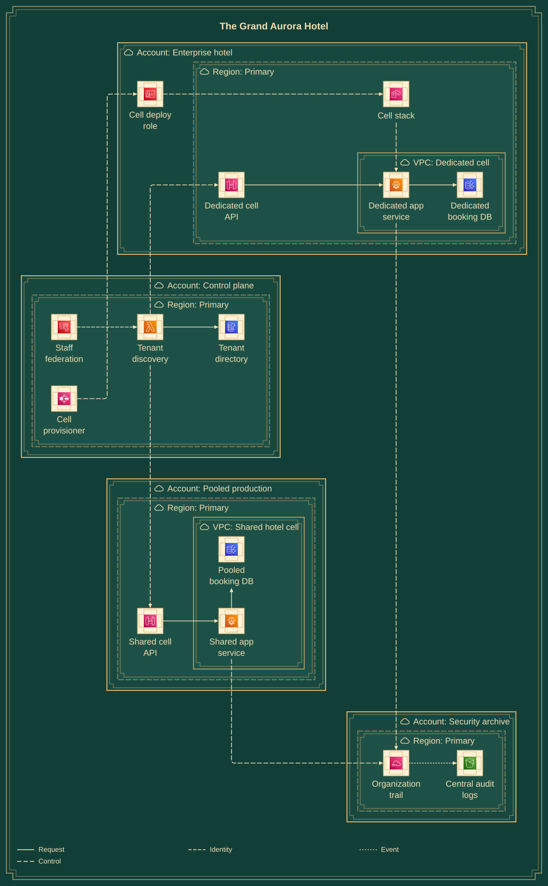
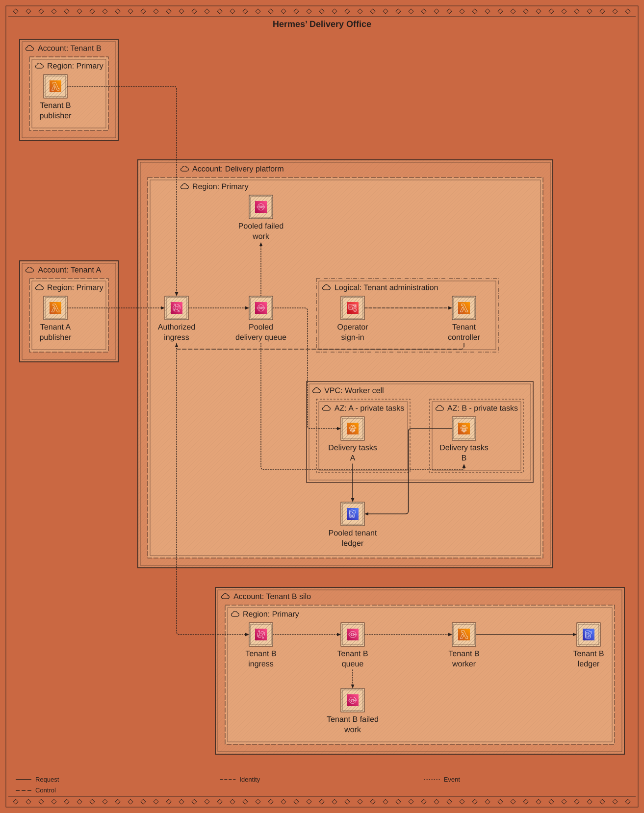
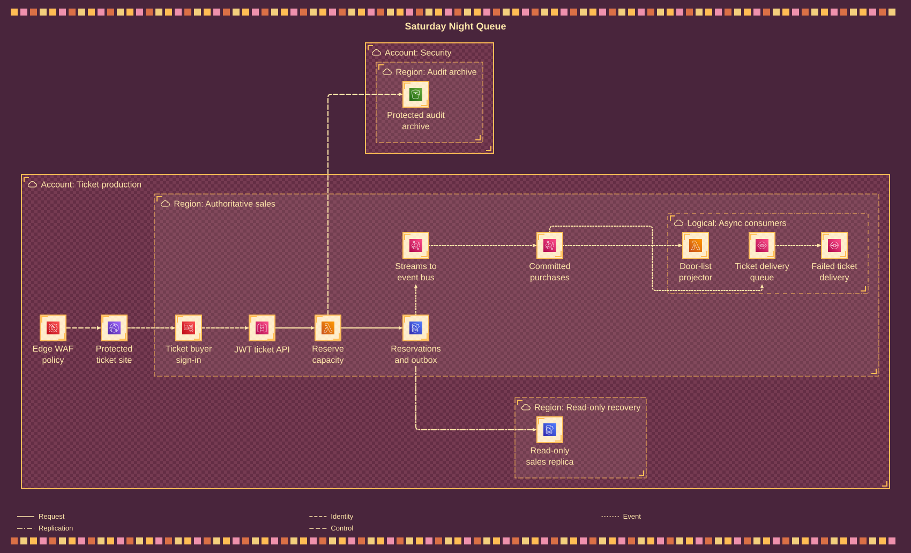
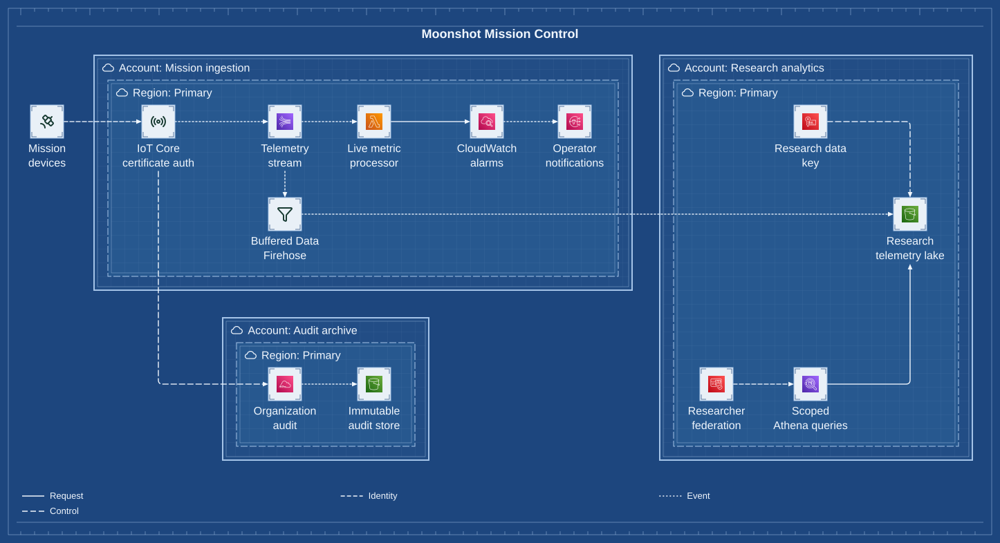
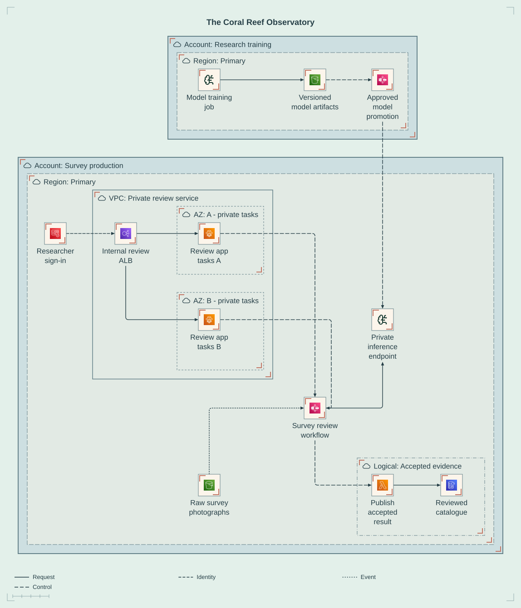
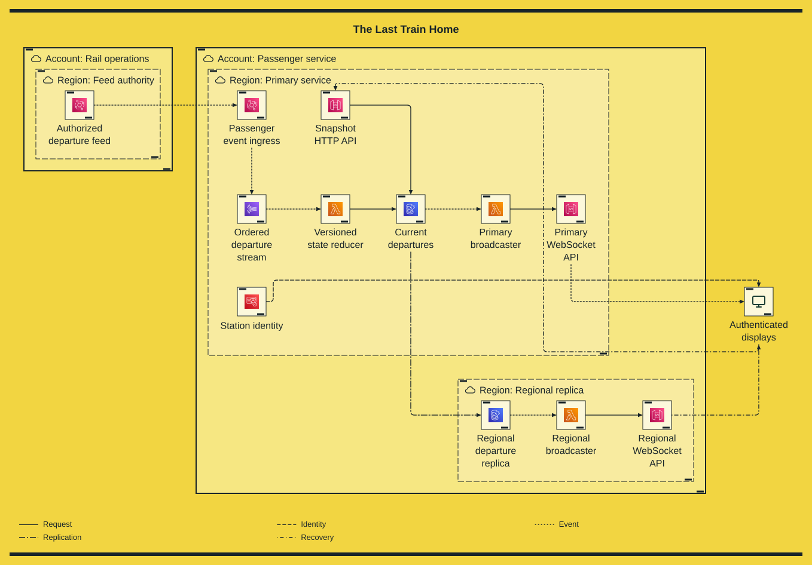
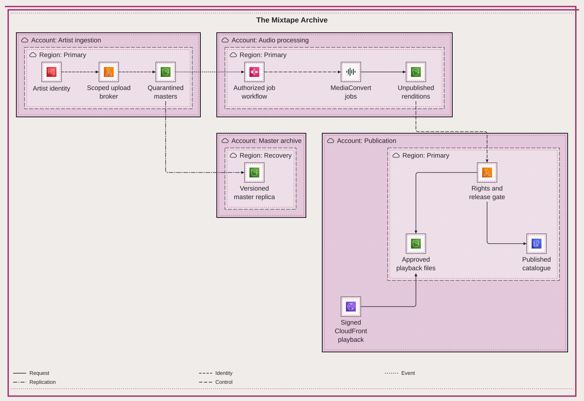
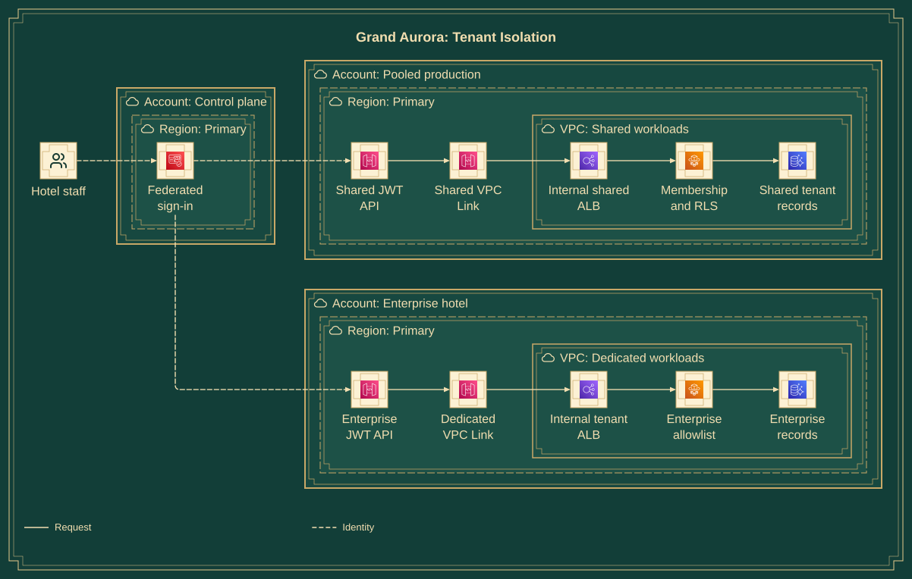

The Grand Aurora Hotel
System overviewEmerald & brass Art Deco
How do independent hotels share a platform without sharing authority?
Open diagram & processThe diagrams aren’t boring.
Creating and maintaining them can be.
Eight fictional AWS systems, ten views. Choose a drawing to explore its architecture and the prompt, source and evidence behind it.
Browse the collectionTen views · eight drawing treatments
Every diagram has its own page.

Emerald & brass Art Deco
How do independent hotels share a platform without sharing authority?
Open diagram & process
Terracotta & ink
Which tenant is allowed to publish, consume and replay each message?
Open diagram & process
1970s dance-floor poster
Can a flash sale survive retries without selling the same capacity twice?
Open diagram & process
Aerospace drafting sheet
Who can ingest telemetry, query research data and change the audit record?
Open diagram & process
Pastel specimen sheet
How does an experimental model become a controlled production tool?
Open diagram & process
Mid-century order pad
Can stores reconnect and replay stock updates without counting them twice?
Open diagram & process
High-contrast wayfinding
What must a station do after losing its region and every open connection?
Open diagram & process
Two-colour music zine
Who can upload a master, process it, and make a recording public?
Open diagram & process
Art Deco · focused identity view
Why is a valid login token insufficient to access another hotel’s records?
Open diagram & process
Art Deco · focused resilience view
Which failures do replicas, standby regions and backups actually cover?
Open diagram & processYou describe the system to your coding agent. The agent authors Mermaid; Beautiflow supplies deterministic rendering, registered icons, measured geometry checks, and guarded source revisions. Pele supplies the native architecture layout.
The authoring prompt, Mermaid source and measured evidence are visible on every diagram page.
The drawing programs run after layout. They preserve service glyphs, measured Arial labels, boundaries, ports and connector paths. No model calls, credentials or visitor-supplied code. Saved SVGs work without JavaScript.
Native geometry and styled element, plain-label, ID and reference integrity are measured. Decorative marks, browser glyph ink, edge-label boxes and AWS behaviour are not fully measured. Architecture supports guarded transforms, not automatic polish.
Every system here is fictional and explanatory, not deployable infrastructure or a security review. Gallery-only comments declare boundary kinds and flow meanings; their coverage and containment are checked, not deployed access policies.
Glyphs come from SVG Logos and Lucide through Beautiflow/Pele, not the official AWS Architecture Icon Package. AWS marks belong to Amazon. Original vector treatments; inspiration: Pele Art Diagrams.
Meet Beautiflow ↗